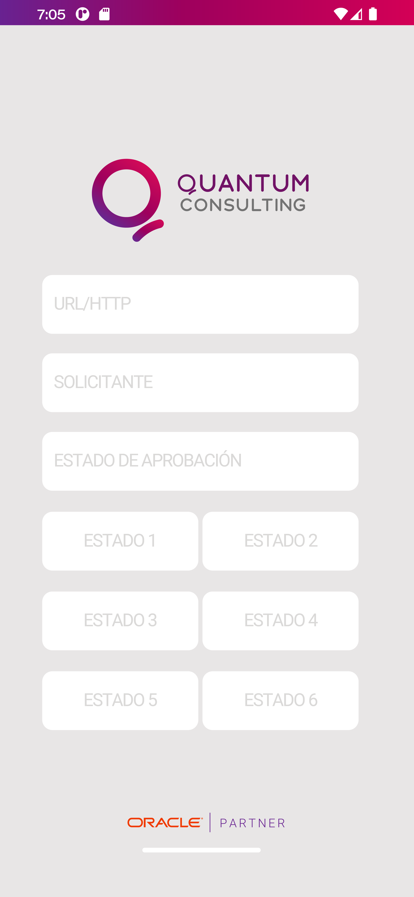
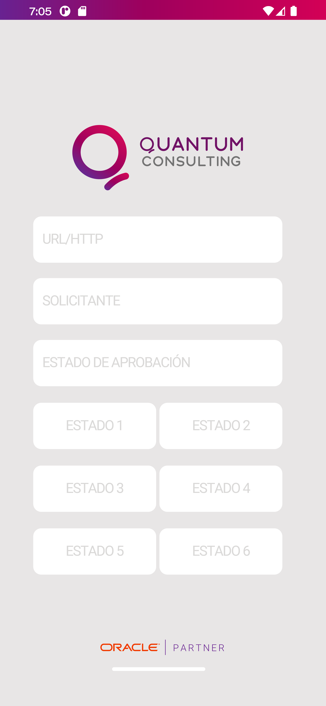

Mi Trabajo
Aprobación orden de compra
App para aprobación de requerimientos y órdenes de compra, dónde se podrá aprobar o rechazar órdenes de compra pendientes que tengan su empresa..
- DART
La aplicación actual se desarrolló utilizando FLUTTER para garantizar su adaptabilidad en ambas plataformas, App Store y Play Store. Se integra con servicios de API REST, permitiendo una autenticación eficiente a través de una orquestación de JDE Edwards. Esto nos permite manejar datos en formato JSON que se presentan en la interfaz de usuario, ofreciendo una experiencia más rápida y cómoda directamente desde las aplicaciones móviles.
Esta implementación elimina la necesidad de depender de una computadora para realizar estas acciones, proporcionando mayor agilidad y accesibilidad.
Desafios y soluciones
Inicié el desafío de desarrollar mi primera aplicación, utilizando solo Postman para visualizar los datos que se implementarían en una app móvil. Al ser autodidacta, encontré soluciones en documentaciones y foros que recomendaban el uso de Android Studio. Con experiencia previa en Java en JDE Edwards, opté por ese lenguaje y practiqué de forma autónoma. Investigué bibliotecas y frameworks para la creación de la aplicación. También superé el desafío de llevar la aplicación a iOS utilizando el framework Flutter, evitando la creación de dos versiones distintas para cada plataforma.

Conteo Cíclico
App para Android que facilita el conteo físico de inventario de forma offline mediante un dispositivo móvil con lector de códigos de barras o un handheld. Una vez completado el conteo, los datos recopilados se envían al servidor AIS de JDE para su ingreso en la plantilla correspondiente..
- JAVA
- XML
La aplicación actual está desarrollada en Java y se integra con servicios de API REST. Facilita una autenticación eficiente mediante la orquestación de JDE Edwards. Utiliza OkHttp para gestionar las comunicaciones HTTP, Retrofit para consumir servicios web RESTful de manera eficiente, y SQLITE para almacenar datos localmente en aplicaciones Android, permitiendo así el uso de la aplicación de manera offline.
Esta aplicación, junto con Procesos Logisticos y Retención de lotes, ha sido diseñada para el uso de empleados que tienen acceso a los pallets y a JDE Edwards. Permite a los usuarios cargar rápidamente la información de los pallets, ya sea utilizando un teléfono celular o un dispositivo handheld, de manera eficiente incluso sin conexión a Internet. Esto significa una notable reducción en la carga de trabajo, eliminando la necesidad de anotar manualmente todos los pallets y luego dedicar tiempo a cargarlos en una computadora posteriormente.
Procesos Logisticos
Se desarrolló en JDE una plataforma para gestionar el control de pallets recolectados mediante una aplicación móvil. La interfaz de la plataforma permite registrar los movimientos logísticos de los pallets, incluyendo entradas desde aduana, salidas, devoluciones y entregas entre plantas. Este sistema proporciona trazabilidad completa de los pallets. Todos los movimientos se someten a un proceso de control que valida la consistencia entre la información recolectada y las transacciones cargadas en JDE.
- JAVA
- XML
AROBACIÓN DE MANTENIMIENTO
Orientada para el cambio de estado sobre las órdenes de trabajo. Despliega una grilla con todas las órdenes de trabajo generadas por el solicitante en espera de aprobación, pudiendo aprobar o rechazar cada orden desplegada.
- DART
.png)
.png) 

.png)
.png)
Clientes

Sobre mi
Soy un apasionado desarrollador de aplicaciones móviles con más de tres años de experiencia en Quantum Consulting, enfocándome tanto en entornos online, como offline, integradas con el servidor AIS del sistema Oracle JD Edwards EO. Durante este tiempo, he trabajado en una variedad de proyectos, desde aplicaciones para la aprobación de órdenes integradas con el Orquestador hasta apps que utilizan bases de datos internas (SQLite) y que se integran a dispositivos Handheld para la lectura de códigos de barras y escaneo de QR. Cabe destacar que para la implementación de estas aplicaciones he usado principalmente Java y diversos frameworks, empleando Retrofit y OkHttp para el manejo eficiente de las solicitudes HTTP. Además, he afrontado y superado el desafío de lanzar con éxito mi primera aplicación en App Store (iOS), donde utilicé Flutter y su lenguaje Dart para el desarrollo demostrando capacidad para adaptarme y mis habilidades técnicas. Supervisé con éxito un equipo multifuncional compuesto por un desarrollador front-end y un diseñador gráfico, liderando la ejecución de proyectos clave. Mi responsabilidad no solo incluía la gestión de tareas diarias, sino también la creación de un entorno colaborativo donde el desarrollador y el diseñador pudieran aprovechar al máximo sus habilidades. Como objetivo profesional busco avanzar hacia el rol de Senior Mobile Developer, aspirando a dominar por completo las diversas plataformas y especializarme en Java, Flutter y Swift. Estoy comprometido a continuar creciendo, aprendiendo y perfeccionando mis habilidades técnicas para contribuir significativamente al desarrollo de aplicaciones innovadoras y de alta calidad.
Mi CV